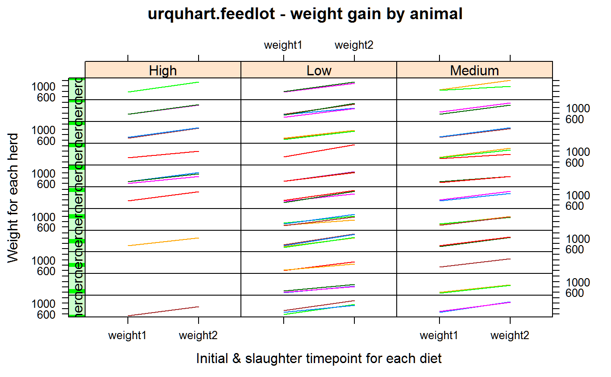

urquhart.feedlot.RdWeight gain calves in a feedlot, given three different diets.
data("urquhart.feedlot")
A data frame with 67 observations on the following 5 variables.
animalanimal ID
herdherd ID
dietdiet: Low, Medium, High
weight1initial weight
weight2slaughter weight
Calves born in 1975 in 11 different herds entered a feedlot as yearlings. Each animal was fed one of three diets with low, medium, or high energy. The original sources explored the use of some contrasts for comparing breeds.
| Herd | Breed |
| 9 | New Mexico Herefords |
| 16 | New Mexico Herefords |
| 3 | Utah State University Herefords |
| 32 | Angus |
| 24 | Angus x Hereford (cross) |
| 31 | Charolais x Hereford |
| 19 | Charolais x Hereford |
| 36 | Charolais x Hereford |
| 34 | Brangus |
| 35 | Brangus |
| 33 | Southern Select |
N. Scott Urquhart (1982). Adjustment in Covariance when One Factor Affects the Covariate Biometrics, 38, 651-660. Table 4, p. 659. https://doi.org/10.2307/2530046
N. Scott Urquhart and David L. Weeks (1978). Linear Models in Messy Data: Some Problems and Alternatives Biometrics, 34, 696-705. https://doi.org/10.2307/2530391
Also available in the 'emmeans' package as the 'feedlot' data.
# \dontrun{ library(agridat) data(urquhart.feedlot) dat <- urquhart.feedlot libs(reshape2) d2 <- melt(dat, id.vars=c('animal','herd','diet')) libs(latticeExtra) useOuterStrips(xyplot(value ~ variable|diet*herd, data=d2, group=animal, type='l', xlab="Initial & slaughter timepoint for each diet", ylab="Weight for each herd", main="urquhart.feedlot - weight gain by animal"))# simple fixed-effects model dat <- transform(dat, animal = factor(animal), herd=factor(herd)) m1 <- lm(weight2 ~ weight1 + herd*diet, data = dat) coef(m1) # weight1 = 1.1373 match Urquhart table 5 common slope#> (Intercept) weight1 herd9 herd16 #> 280.222922 1.137315 -71.611764 -51.679186 #> herd19 herd24 herd31 herd32 #> -81.089896 -80.768678 -36.269082 -65.477829 #> herd33 herd34 herd35 herd36 #> -125.209353 -3.970439 -29.895929 -15.328810 #> dietLow dietMedium herd9:dietLow herd16:dietLow #> -33.622123 -12.783862 -16.960282 9.502665 #> herd19:dietLow herd24:dietLow herd31:dietLow herd32:dietLow #> 121.696783 20.625565 50.806235 66.358372 #> herd33:dietLow herd34:dietLow herd35:dietLow herd36:dietLow #> 222.442937 -27.760884 25.084868 -1.751030 #> herd9:dietMedium herd16:dietMedium herd19:dietMedium herd24:dietMedium #> NA NA 49.530167 NA #> herd31:dietMedium herd32:dietMedium herd33:dietMedium herd34:dietMedium #> -29.462442 -67.216138 25.450529 -20.649019 #> herd35:dietMedium herd36:dietMedium #> 2.447965 -116.014781# random-effects model might be better, for example # libs(lme4) # m1 <- lmer(weight2 ~ -1 + diet + weight1 + (1|herd), data=dat) # summary(m1) # weight1 = 1.2269 # }